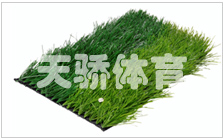
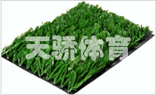

根据足球运动的特点和国际足联（FIFA）的技术标准要求，依托雄厚的技术研发力量，天骄所用的人造草集
合了多款融尖端科技于一身的足球场专用人造草产品，针对不同用户的需求，从草高55mm至64mm均有多种不同的
型号可供选择，均已通过国际足联二星认证。
足球场人造草特点：
1、仿真度高，草纤维柔软，对皮肤几无伤害；
2、极强的耐磨度，使用寿命长；
3、防紫外线、耐腐蚀、防霉，且环保无污染、不褪色；
4、足球运动速度、反弹力与天然草几乎一致；
5、良好的透气性及排水性能；
6、极佳的牵引力，使运动员能准确地判断球的运动方向；
7、接缝少，且无痕迹。
橄榄单丝草

产品规格
草高55至64mm，草纤维结构主要为网状直苗、直尼混织、特制哑光单丝，草丝磅重为11000DTEX以上，行距为3/4、1/2、3/8。
产品特点
该系列人造草无论从外观、耐用性、抗老化性、运动员与人造草坪之间的相互作用、球与人造草坪之间的相互
作用等实验室和场地测试指标，都完全符合国际足联的二星推荐标志要求，目前，已有多个铺设了该系列人造
草产品的场地（例如：韩国Chung Jang体育公园场地等）顺利地获得了国际足联（FIFA）二星推荐标志。
因此，该系列产品已被业内公认为“殿堂级”的人造草产品。
网状草
适合于重点中学、高等院校专业运动队的比赛和训练场地，以及需举办国际比赛的体育中心、足球训练基地
和各级专业足球俱乐部使用。

产品规格
草高40至55mm，草纤维结构主要为网状直苗、桥式大开网、橄榄型喷丝、直曲混合、网单混织等，草丝磅重为8000至11000DTEX，行距为3/4、3/8。
产品特点
该系列人造草为“专业级”人造草产品，在外观上几乎与天然草相差无几，色泽鲜亮，在性能上最大限度地与
天然草的运动性能相吻合，在抗耐磨性、耐候性方面有极大的提高，其融合最新科技成果的单丝草产品解决了
以往切片单丝草出现的起毛、易脱落等现象，同时也摒弃了以往人造草产品填充料较易板结的现象，使得维护
更简捷。
产品用途
适合于任何中小学、高等院校、体育俱乐部、体育场馆的专业运动场地所建设，尤其是足球场地。